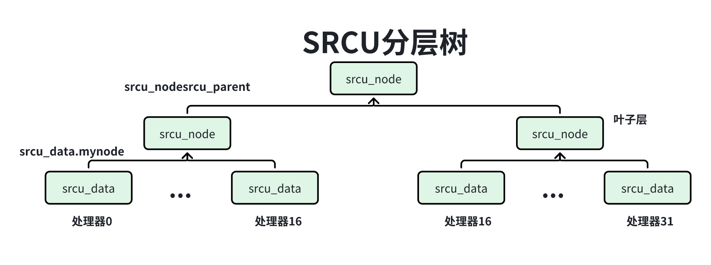
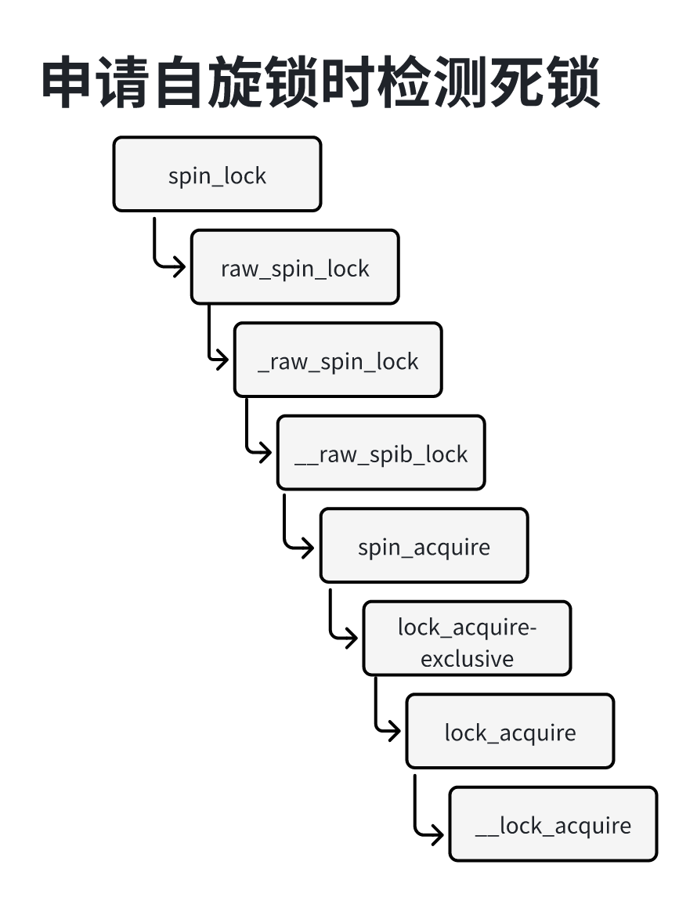

可睡眠RCU（Sleepable RCU， SRCU）允许在读端临界区里面睡眠。
在读端临界区里面睡眠，可能导致宽限期长，为了避免影响整个系统，使用SRCU的子系统需要定义一个SRCU域，每个SRCU域有自己的读端临界区和宽限期。
目前内核有3种可睡眠的RCU：
1）经典SRCU：传统的SRCU，配置宏CONFIG_CLASSIC_SRCU。
2）微型SRCU：为单处理器系统设计，配置宏是CONFIG_TINY_SRCU。
3）树型SRCU：为拥有几百个或几千个处理器的大型系统设计，配置宏CONFIG_TREE_SRCU。
内核4.12版本引入微型SRCU和树型SRCU，保留经典SRCU，作为微型SRCU和树形SRCU出现问题时的备选项。由于微型SRCU和树型SRCU在测试中表现非常好，所以内核4.13八本废除了经典SRCU。
首先需要定义一个SRCU域：
1struct srcu_struct ss;然后初始化SRCU域：
11int init_srcu_struct(struct srcu_struct *sp);成功则返回0，内存分配失败返回”-ENOMEM“。
读者访问临界区的方法如下：
31int idx;2idx = srcu_read_lock(&ss);3srcu_read_unlock(&ss, idx);函数srcu__read_lock()返回一个索引，需要把这个索引传给函数srcu_read_unlock()。
在读端临界区里面应该使用宏srcu_dereference(p,sp)访问指针，这个宏封装子数据依赖屏障，即只有阿尔法处理器需要的读内存屏障。
写者可以使用下面4个函数。
1、使用函数synchonize_srcu()等待宽限期结束，即所有读者退出读端临界区，然后写者执行下一步操作。这个函数可能睡眠。
11void synchronize_srcu(struct srcu_struct *sp);2、使用函数synchronize_srcu_expedited()等待宽限期结束，强制宽限期快速结束。
11void synchronize_srcu_expedited(struct srcu_struct *sp);3、使用函数call_srcu()注册延后执行的回调函数，把回调函数添加到srcu_struct结构体的回调函数链表中，立即返回，不会睡眠。
11void call_srcu(struct srcu_struct *sp, struct rcu_gead *head, rcu_callback_t func);4、使用函数srcu_barriera()等待所有回调函数执行完。这个函数可能睡眠。
11void srcu_barrier(struct srcu_struct *sp);用完以后需要使用函数cleanup_srcu_struct()销毁结构体。
11void cleanup_srcu_struct(struct srcu_struct *sp);可以使用下面宏定义并且初始化数据类型为srcu_struct的变量：
-> DEFINE_SRCU(name)：定义外部全局变量。
-> DEFINE_STATIC_SRCU(name)：定义静态全局变量或静态局部变量。
使用这两个宏定义的变量，不需要使用函数init_srcu_struct()初始化，也不需要使用函数cleanup_srcu_struct()销毁。
使用树型SRCU描述技术原理。
SRCU使用数据结构类型srcu_struct描述SRCU域的状态，使用数据类型srcu_node描述处理器分组的SRCU状态，使用数据类型srcu_data描述处理器的SRCU状态，每个处理器对应一个srcu_data实例。
如下图所示，SRCU分层树节点的类型是srcu_node，成员srcu_parent指向上一层srcu_node实例，每个处理器的srcu_data实力的成员mynode指向叶子节点。

数据类型srcu_struct的定义如下：
x1// 位置：include/linux/srcutree.h2
3struct srcu_struct {4 5 // 定义了所有树节点6 struct srcu_node node[NUM_RCU_NODES]; 7 // 保存每个层次的第一个struct_node实例8 struct srcu_node *level[RCU_NUM_LVLS + 1];9 10 struct mutex srcu_cb_mutex; 11 spinlock_t gp_lock; 12 struct mutex srcu_gp_mutex; 13 // 是当前读者数组索引，指示数据类型srcu_data中数组srcu_lock_count和srcu_unlock_count14 // 的哪个数组项保存当前宽限期的读端临界区计数15 unsigned int srcu_idx; 16 // 是当前宽限期编号17 unsigned long srcu_gp_seq; 18 unsigned long srcu_gp_seq_needed; 19 unsigned long srcu_gp_seq_needed_exp;20 unsigned long srcu_last_gp_end;21 // 指向每个处理器的srcu_data实例22 struct srcu_data __percpu *sda;23 unsigned long srcu_barrier_seq; 24 struct mutex srcu_barrier_mutex;25 struct completion srcu_barrier_completion;26 27 atomic_t srcu_barrier_cpu_cnt; 28 29 struct delayed_work work;30 struct lockdep_map dep_map;32};数据类型srcu_node定义如下：
141// 位置：inlcude/linux/srcutree.h2
3struct srcu_node {4 spinlock_t lock;5 unsigned long srcu_have_cbs[4]; 6 unsigned long srcu_data_have_cbs[4]; 7 unsigned long srcu_gp_seq_needed_exp; 8 // 指向上一层分组的srcu_node实例9 struct srcu_node *srcu_parent; 10 // 属于本分组的处理器的最下编号11 int grplo; 12 // 属于本分组的处理器的最大编号13 int grphi; 14};数据类型srcu_data定义如下：
271// 位置：include/linux/srcutree.h2
3struct srcu_data {4
5 // 读者状态6 // 保存进入读端临界区的计数7 unsigned long srcu_lock_count[2]; 8 // 保存退出读端临界区的计数9 unsigned long srcu_unlock_count[2];10 11 // 写者状态12 spinlock_t lock ____cacheline_internodealigned_in_smp;13 // 回调函数链表14 struct rcu_segcblist srcu_cblist;15 unsigned long srcu_gp_seq_needed;16 unsigned long srcu_gp_seq_needed_exp; 17 bool srcu_cblist_invoking; 18 struct delayed_work work; 19 struct rcu_head srcu_barrier_head;20 // 指向叶子节点21 struct srcu_node *mynode; 22 // 本处理器在叶子节点的位图中的位掩码23 unsigned long grpmask; 24 int cpu;25 struct srcu_struct *sp;26};27
数据类型srcu_data有两个数组：
21unsigned long srcu_lock_countp[2];2unsigned long srcu_unlock_count[2];数组srcu_lock_count保存进入读端临界区的计数，数组srcu_unlock_count保存退出读端临界区的计数，我们把这两个数组称为读端临界区计数数组。每个数组有两项：一项用来保存上一个宽限期的计数，另一项保存当前宽限期的计数。
数组类型srcu_struct的成员srcu_idx是当前数组索引，指示读端临界区计数数组的哪一项保存到安茜宽限期的计数：如果是偶数，那么索引为0的数组保存当前宽限期的计数；如果是奇数，那么索引为1的数组保存当前宽限期的计数。
在一个宽限期内，如果所有处理器退出读端临界区的计数总和等于进入读端临界区的计数总和，说明这个宽限期内进入读端临界区的所有读者退出读端临界区，那么宽限期可以结束。
函数srcu_read_lock标记进入SRCU读端临界区，代码如下：
121// 调用链路：srcu_read_lock() -> __srcu_read_lock()2// 位置：kernel/rcu/srcutree.c3
4int __srcu_read_lock(struct srcu_struct *sp)5{6 int idx;7
8 idx = READ_ONCE(sp->srcu_idx) & 0x1;9 this_cpu_inc(sp->sda->srcu_lock_count[idx]);10 smp_mb(); 11 return idx;12}把当前宽限期的进入读端临界区的计数加1，并且返回读者数组索引。
哈数srcu_read_unlock()标记退出SRCU读端临界区代码如下：
81// 调用链路：srcu_read_unlock() -> __srcu_read_unlock()2// 位置：kernel/rcu_srcutree.c3
4void __srcu_read_unloc(struct srcu_struct *sp, int idx)5{6 smp_mb();7 this_cpu_inc(sp->sda->srcu_unlock_count(idx));8}把进入读端临界区时的宽限期对应的退出读端临界区的计数加1。
数据类型srcu_struct有两个成员：
1、struct delayed_work work：定义了一个工作项，处理函数是process_srcu，专门负责启动和结束宽限期，SRCU把这个工作项添加到工作队列system_power_efficient_wq中。
2、unsigned long srcu_gp_seq：保存宽限期编号。
srcu_gp_seq保存最低两位存放宽限期的状态，其他为存放宽限期的编号。宽限期的状态有3种状态：
1、SRCU_STATE_IDLE：宽限期的初始化状态是空闲状态，如果在当前宽限期没有使用call_srcu()注册回调函数，宽限期就会保存空闲状态。
2、SRCU_STATE_SCAN1:SCAN1状态，等待所有读者退出前一个宽限期的临界区。
3、SRCU_STATE_SCAN2:SCAN3状态，等待所有读者退出当前宽限期的临界区。
假设当亲宽限期的编号是N，状态机的运行过程如下：
1、初始化状态是空闲状态，如果在宽限期N使用call_srcu()注册回调函数，那么启动宽限期N，从空闲状态切换到SCAN1状态。
2、SCAN1状态：等待所有读者退出宽限期（N-1）的临界区，然后切换当前读者数组索引，从SCAN1状态切换到SCAN2状态。
切换当前读者所属组索引的目的是：从现在开始，读者进入的临界区属于宽限期（N+1），宽限期N的临界区只许处，不许进，如果在等待所有读者退出宽限期N的临界区的过程中，还允许读者进入宽限期N的line汲取，那么可能导致宽限期N延长。
SCAN1状态为什么要等待所有读者退出宽限期（N-1）的临界区？因为宽限期（N+1）和宽限期（N-1）使用读端临界区结束数组的同一个数组项。
3、SCAN2状态：等待所有读者退出宽限期N的临界区，然后结束宽限N，切换到奥宽限N+1的空闲状态。
函数process_srcu的代码如下：
111// 位置：kernel/rcu/srcutree.c2
3void process_srcu(struct work_struct *work)4{5 struct srcu_struct *sp;6
7 sp = container_of(work, struct srcu_struct, work.work);8
9 srcu_advance_state(sp);10 srcu_r11}调用函数srcu_advance_state执行单签宽限期的状态机，然后调用函数srcu_reschedule确定是否需要启动下一个宽限期。
函数srcu_advance_state代码如下：
581// 位置：kernel/rcu/srcutree.c2
3static void srcu_advance_state(struct srcu_struct *sp)4{5 int idx;6
7 mutex_lock(&sp->srcu_gp_mutex);8
9 idx = rcu_seq_state(smp_load_acquire(&sp->srcu_gp_seq)); /* ^^^ */10 // 假设当前宽限期的编号N 如果宽限期N处于空闲状态11 if (idx == SRCU_STATE_IDLE) {12 spin_lock_irq(&sp->gp_lock);13 // 如果在宽限期N没有注册回调函数，那么不需要启动宽限期N14 if (ULONG_CMP_GE(sp->srcu_gp_seq, sp->srcu_gp_seq_needed)) {15 WARN_ON_ONCE(rcu_seq_state(sp->srcu_gp_seq));16 spin_unlock_irq(&sp->gp_lock);17 mutex_unlock(&sp->srcu_gp_mutex);18 return;19 }20 idx = rcu_seq_state(READ_ONCE(sp->srcu_gp_seq));21 // 启动宽限期N从空闲状态切换到SCAN1状态22 if (idx == SRCU_STATE_IDLE)23 srcu_gp_start(sp);24 spin_unlock_irq(&sp->gp_lock);25 if (idx != SRCU_STATE_IDLE) {26 mutex_unlock(&sp->srcu_gp_mutex);27 return;28 }29 }30
31 // 如果卡unxainqiN处于SCAN1状态32 if (rcu_seq_state(READ_ONCE(sp->srcu_gp_seq)) == SRCU_STATE_SCAN1) {33 // 检查所有读者是否退出宽限期N-1的临界区，如果没有，那么返回34 idx = 1 ^ (sp->srcu_idx & 1);35 if (!try_check_zero(sp, idx, 1)) {36 mutex_unlock(&sp->srcu_gp_mutex);37 return;38 }39 // 如果所有读者退出宽限期N-1的临界区，那么切换当前读者数组索引，从现在开始，读者进入临界区属于宽限期40 // N+1 宽限期N的临界区只许处不许进41 srcu_flip(sp);42 // 从SCAN1状态切换到SCAN2状态43 rcu_seq_set_state(&sp->srcu_gp_seq, SRCU_STATE_SCAN2);44 }45
46 // 如果宽限期N处于SCAN2状态，47 if (rcu_seq_state(READ_ONCE(sp->srcu_gp_seq)) == SRCU_STATE_SCAN2) {48
49 // 检查所有读者是否退出宽限期N的临界区，如果没有直接返回50 idx = 1 ^ (sp->srcu_idx & 1);51 if (!try_check_zero(sp, idx, 2)) {52 mutex_unlock(&sp->srcu_gp_mutex);53 return; 54 }55 // 如果所有读者退出宽限期N的临界区，那么结束宽限期N切换到宽限期N+1的空闲状态56 srcu_gp_end(sp); 57 }58}函数try_check_zero负责检查所有读者是否退出了某个宽限期的临界区，代码如下：
361// 位置：kernel/rcu/structtree.c2
3static bool try_check_zero(struct srcu_struct *sp, int idx, int trycount)4{5 for (;;) {6 if (srcu_readers_active_idx_check(sp, idx))7 return true;8 if (--trycount + !srcu_get_delay(sp) <= 0)9 return false;10 udelay(SRCU_RETRY_CHECK_DELAY);11 }12}13
14
15static bool srcu_readers_active_idx_check(struct srcu_struct *sp, int idx)16{17 unsigned long unlocks;18
19 unlocks = srcu_readers_unlock_idx(sp, idx);20 smp_mb(); /* A */21 return srcu_readers_lock_idx(sp, idx) == unlocks;22}23
24
25static unsigned long srcu_readers_unlock_idx(struct srcu_struct *sp, int idx)26{27 int cpu;28 unsigned long sum = 0;29
30 for_each_possible_cpu(cpu) {31 struct srcu_data *cpuc = per_cpu_ptr(sp->sda, cpu);32
33 sum += READ_ONCE(cpuc->srcu_unlock_count[idx]);34 }35 return sum;36}先结算所有出列读端临界区的计数总和，然后计算所有处理器进入读端临界区的计数总和。如果两个总和相等，说明所有读者退出了某个宽限期的临界区。
每个处理器的srcu_data实例idea成员srcu_cblist是回调函数链表，存放使用函数call_srcu()注册的回调函数，回调函数的数据结构和RCU回调函数相同。
函数call_srcu用来注册回调函数，把主要工作委托给了函数__call_srcu代码如下：
471// 位置：kernel/rcu/srcutree.c2
3void __call_srcu(struct srcu_struct *sp, struct rcu_head *rhp,4 rcu_callback_t func, bool do_norm)5{6 unsigned long flags;7 bool needexp = false;8 bool needgp = false;9 unsigned long s;10 struct srcu_data *sdp;11
12 check_init_srcu_struct(sp);13 rhp->func = func;14 local_irq_save(flags);15 sdp = this_cpu_ptr(sp->sda);16 spin_lock(&sdp->lock);17 // 把回调函数添加到最后一个子链表RCU_NEXT_TAIL的尾部18 rcu_segcblist_enqueue(&sdp->srcu_cblist, rhp, false);19 // 把已结束宽限期的回调函数移到子链表RCU_DONE_TAIL20 rcu_segcblist_advance(&sdp->srcu_cblist,21 rcu_seq_current(&sp->srcu_gp_seq));22 // 取下一个宽限期编号23 s = rcu_seq_snap(&sp->srcu_gp_seq);24 // 加速回调函数，把最后一个子链表RCU_NEXT_TAIL的回调函数移动到前面的子链表中25 (void)rcu_segcblist_accelerate(&sdp->srcu_cblist, s);26 27 // 如果本处理器的srcu_data实例的成员srcu_gp_seq_needed小于下一个宽限期的编号，那么需要启动下一个正常宽限期28 if (ULONG_CMP_LT(sdp->srcu_gp_seq_needed, s)) {29 sdp->srcu_gp_seq_needed = s;30 needgp = true;31 }32 // 如果参数do_norm的值是false， 并且本处理器的srcu_data实例的成员33 // srcu_gp_seq_needeed_exp小于下一个宽限期编号，那么需要启动下一个加速宽限期34 if (!do_norm && ULONG_CMP_LT(sdp->srcu_gp_seq_needed_exp, s)) {35 sdp->srcu_gp_seq_needed_exp = s;36 needexp = true;37 }38 spin_unlock_irqrestore(&sdp->lock, flags);39 // 如果需要启动一个正常宽限期，那么启动下一个正常宽限期，把负责启动新的款系亲和计数当前宽限期的工作40 // 添加到工作队列中41 if (needgp)42 srcu_funnel_gp_start(sp, sdp, s, do_norm);43 44 // 如果需要启动下一个加速宽限期，那么调用函数srcn_funnel_exp_start处理45 else if (needexp)46 srcu_funnel_exp_start(sp, sdp->mynode, s);47}每个处理器srcu_data实例的成员”struct dellayed_work work“定义了一个工作项，这个工作项的处理函数是srcu_invoke_callbcaks负责执行已结束宽限期的回调函数。SRCU调用函数srcu_schedule_cbs_sdp把这个工作添加到工作队列system_power_effcient_wq中。
函数srcu_invode_callbacks的代码如下：
41CK队列中2 if (more)3 srcu_schedule_cbs_sdp(sdp, 0);4}常见的死锁有以下4种情况：
1、进程重复申请同一个锁，例如重复申请同一个自旋锁，使用读写锁，第一次申请读锁，第二次申请写锁。
2、进程申请自旋锁时没有禁止硬终端，进程获取自旋锁以后，硬中断抢占，申请同一个自旋锁，这种AA死锁很隐蔽，人工审查很难发现。
3、两个进程都获取锁L1和L2，进程1持有锁L1，再去 获取锁L2，如果这个时候进程2持有锁L2，并且尝试获取锁L1，那么进程1和进程2就会死锁，称为AB-BA死锁。
4、在一个处理器上，进程1持有锁L1，再去获取锁L2，在另一个处理器上进程2持有锁L2，硬中断请战进程2以后获取锁L1，这种AB-BA死锁很隐蔽，人工审查很难发现。
避免AB-BA死锁最简单的方法就是定义锁的申请顺序，以破坏死锁的唤醒等待条件，但是如果一个系统拥有几百个申请上千个锁，那么没法完全定义所有的锁的申请顺序，更可行的方法是在开发阶段提前发现潜在的死锁风险，而不是等到市场上出现死锁是给用户带来标准的体验。内个提供了死锁检测工具lockdep用来发现内核的死锁风险。
死锁检测工具lockdep的配置方法如下：
1、CONFIG_LOCKDEP：在配置菜单中看不到这个配置宏，打开配种宏CONFIG_PROVE_LOCKING或CONFIG_DEBUG_LOCK_ALLOC的时候会自动打开这个配置宏。
2、CONFIG_PROVE_LOCKING：允许内核报告死锁的问题。
3、CONDIF_DEBUG_LOCK_ALLOC：检查内核是否错误的释放持有锁。
4、COFIG_DEBUG_LOCKING_API_SELFTESETS：内核在初始化的过程中运行一小段自我检测程序，自我检测程序调试机制是否可以发现常见的锁缺陷。
死锁检测工具lockdep操作的基本对象是锁类，例如结构体里面的锁是一个锁类，结构体的每个实例里面的锁是锁类的一个实例。
lockdep跟踪每个锁类的自身状态，也跟踪各个锁类之间的依赖关系，通过一系列的验证规则，确保锁类的状态和锁类之间的依赖总是正确的。另外，锁类一旦在初次使用被注册，后续就会一直存在，它在所有具体实例都会关联到它。
lockdep为锁类定义了4n+1种使用历史状态，其中的4指的是如下：
1、该锁曾在STATE上下文中被持有过。
2、该锁曾在STATE上下文中被以读锁形式持有过。
3、该锁曾在开启STATE的情况下爱被持有过。
4、该锁曾在开启STATE的情况下被以读锁形式持有过。
其中的n是STATE状态的个数，STATE状态包括硬中断（hardirq）、软中断（sofrirq）和reclaim_fs（__GFP_FS分配，表示允许下调用到文件系统。如果文件系统持有锁以后使用标志位__GFP_FS申请内存，子啊内存严重不足的情况下，需要回收文件页，把修改过的文件页写回到存储涉笔，递归调用文件系统的函数，可能导致死锁）。
其中的1指的是该锁曾经被使用过。
如果锁曾在硬中断上下文中被持有过，那么锁的硬中断安全的（hadrdirq-safe）；如果锁曾在开启硬中断的情况下被持有过，那么锁是硬中断不安全的（hardirq-unsafe）。
如果锁曾在软中断上下文中被持有过，那么锁是软中断安全的（softirq-safe）；如果锁曾在开启软中断的情况下被持有过，那么锁是软中断是不安全的（softirq-unsafe）。
单锁状态规则如下：
1、一个软中断不安全的锁类也是硬中断不安全的锁类。
2、任何一个锁类，不可能同时是硬中断安全的和硬中断不安全的，也不能同时是软中断安全的和软中断不安全的，也就是说：硬中断安全和硬中断不安全是互斥的，软中断安全和软中断不安全也是互斥的。
多端依赖规则如下：
1、同一个锁类不同被获取两次，否则可能导致死锁（AA死锁）。
2、不能以不同顺序获取两个锁类，否则导致AB-BA死锁。
3、不允许在获取硬中断安全的锁类之后获取硬中断不安全的锁类。
硬中断安全的锁类硬中断获取。假设处理器0上的进程首先获取硬中断安全的锁类A，然后获取硬中断不安全的锁类B；处理器1上的进程获取到锁类B，硬中断抢占进程，获取锁类A可能导致AB-BA死锁。
4、不允许在获取软中断安全锁类之后获取软中软不安全的锁类。
软中断安全的锁类可能被软中软获取。假设处理器0上的进程首先获取软中断安全的锁类A，然后获取软中断不安全的锁类B；处理器1上的进程获取锁类B，软中断抢占进程，获取锁类A可能导致AB-BA死锁。
当锁类的状态发生变化时，检查下面的依赖规则：
1、如果锁类的状态变成硬中断安全，检查过去是否在获取它之后获取硬中断不安全的锁。
2、如果锁类的状态变成软中断安全，检查过去是否在获取它之后获取软中断不安全的锁。
3、如果锁类的状态变成硬中断不安全，检查过去是否在获取硬中断安全的锁之后获取它。
4、如果锁累的状态变成软中断不安全，检查过世是否在获取软中断安全的锁之后获取它。
内核有时需要 获取同一个锁类的多个实例吗，上面的检查规则导致误报”重复上锁“，需要使用”spin_lock_nested(lock, subclass)“这类编程接口设置子类以区分同类锁，消除警报，例如：
101// 位置：kernel/sched/sched.h2
3static inline void double_lock(spinlock_t *ll, spinlock_t *12)4{5 if(11 > 12)6 swap(11,12);7 8 spin_lock(11);9 spin_lock)nested(12, SINGLE_DEPTH_NESTING); 10}以自旋锁为例说明，自旋锁的结构体嵌入了一个数据类型为lockdepo_map的成员dep_map，用来把锁实例映射到锁类。
151// 位置：include/linux/spinlock_types.h2
3typedef struct spinlock {4 union {5 struct raw_spinlock rlock;6
7 struct {10 u8 __padding[LOCK_PADSIZE];11 struct lockdep_map dep_map;12 };13 };15} spinlock_t;数据类型lockdep_map的成员key是锁类的键值，同一个锁类的所有锁实例使用相同的键值；成员class_cache[0]指向锁类的主类（即子类为0）class_cache[1]指向锁类的子类为1。
81// 位置：include/linux/lockdep.h2
3struct lockdep_map{4 struct lock_class_key *key;5 // NR_LOCKDEP_CACHING_CLASSES值为26 struct lock_class *class_cache[NR_LOCKDEP_CACHING_CLASSES];7 ....8}使用函数spin_lock_init()初始化自旋锁的时候，定义一个数据类型为lock_class_key的静态局部变量，使用它的地址作为锁类的键值。
181// 调用链路：spin_lock_init() -> raw_spin_lock_init()2// 位置：include/linux/spinlock.h3
4 7 8 9
11// 位置：kernel/locking/lockep.c12void lockdep_init_map(struct lockded_map *lock, const char *name, 13 struct lock_calss_key *key, int subclass)14{15 ...16 lock->key = key;17 ...18}锁的主要成员如下：
161struct lock_class{2 // 用来把锁类加入散列表，第一次申请锁的时候，需要把锁实力映射到锁类，根据锁实例的键值在散列表中查找锁类3 struct hlist_node hash_entry;4 // 用来把锁类加入全局逇锁类链表5 struct list_head lock_entry;6 // 指向键值7 struct lockdep_subclass_key *key;8 ...9 // 锁类的使用历史状态10 unsigned long usage_mask;11 ...12 // locks_after曾经获取本锁类之后获取的所有锁类13 // locks_before曾经获取本所锁类之前获取的所有锁类14 struct list_head locks_after, locks_before;15 ...16}在进程描述符中增加一下成员：
141// 位置：include/linnux/sched.h2
3struct task_struct {4 ...5 u64 curr_chain_key8 int lockdep_depth;9unsigned int lockdep_recursion;10struct held_lock held_locks[MAX_LOCK_DEPTH];11 gfp_t lockdep_reclaim_gfp;12 ...14};数组held_locks保存进程持有的锁，成员lockdep_depth是进程持有锁的数量。
如下图所示，调用spin_lock()申请自旋锁的时候检测死锁，函数__lock_acquire是lockdep检测死锁的核心函数，执行过程如下：

1、如果是第一次申请实例，需要把锁实例映射到锁类。
2、把锁添加到当前进程的数组held_locks中。
3、调用函数mark_irqflags修改锁的状态，检查依赖规则。
4、调用函数calidate_chain检查死锁。
假设当前申请锁类L2，函数validate_chain的检查过程如下：
1、调用函数check_deadlock检查重复上锁，即当前进程是否已经持有锁类L2，如果已经持有锁类L2，除非两次都申请读锁，否则存在死锁。
2、调用函数check_prevs_add，根据以前学到的依赖关系检查死锁。
假设当前申请锁类L2，函数check_prevws_add针对当前集成能的数组held_locks中的每个锁类L1，调用函数check_nreY_add检查，检查过程如下：
1、调用函数check_noncircular来检查AB-BA死锁。
-> 检查锁类L1是否出现锁类L2的链表locks_after中，如果出现，说明以前的申请顺序是L
2-L1，现在的申请顺序是L1-L2存在死锁的风险。
-> 递归检查，针对锁类L2的链表locks_after中的每个锁类L3，检查锁类L1是否出现锁类L3的链表locks_after中，如果出现，说明存在死锁风险。
2、调用函数check_prev_add_irq检查是否存在以下情况：“在获取硬中断安全的锁类之后获取硬中断不安全的锁类”或者”在获取软中断安全锁类之后获取软中断不安全的锁类“。
如果锁类L1的链表lock_befire中存在硬中断安全的锁类，并且锁类L2的链表locks_after中存在硬中断不安全的锁类，那么爱说明在获取硬中断安全的锁类之后获取硬中断不安全的锁类，存在死锁的风险。
3、学习锁类的依赖关系：把锁类L2添加到锁类L1的链表locks_after中，把锁类L1天假到锁类L2 的链表中locks_before中。